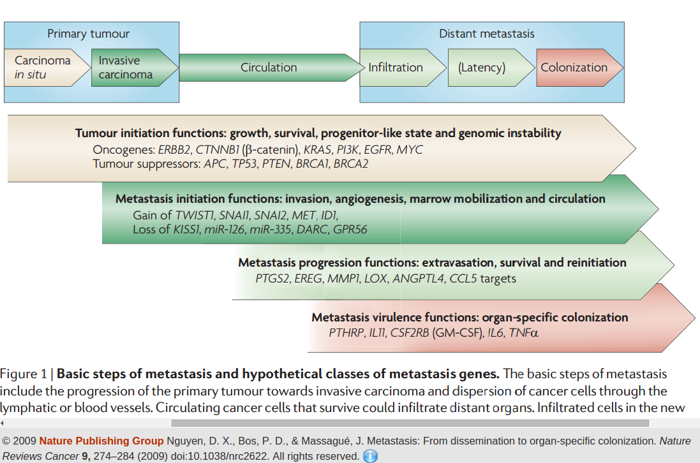

Vähi siirded ehk metastaasid
Onkobioloogia
Taavi Päll
vanemteadur, VTAK
Recap
Vähi mikrokeskkond
Kasvajarakud ümbritseb kompleksne mikrokeskkond, mis koosneb:
- normaalsetest rakkudest,
- sekreteeritud valkudest,
- füsioloogilistest madalmolekulaarsetest ühenditest (hormoonid),
- veresoontest.

Heterotüüpne ligand-retseptor signalisatsioon
- Erinevate rakutüüpide vahelist signaliseerimist nimetatakse heterotüüpseks signalisatsiooniks.
- Heterotüüpne signalisatsioon soodustab või pidurdab kõrvalolevate teiste rakutüüpide jagunemist ja/või ellujäämist.

Epiteliaal-mesenhümaalne transformatsioon (EMT)
- EMT on kartsinoomirakus transientne protsess mille käigus:
- epiteelirakud kaotavad polaarsuse,
- lõhustuvad rakkude vahelised adhesioonid ja
- rakud omandavad amööbse liikumise ja invasiivse võime.
- Vähi metastaaside teke on seotud EMT-ga.
- EMT-ga on seotud TGF-\(\beta\) indutseeritavad transkriptsioonifaktorid Twist, Snail, Slug ja ZEB.
Metastaasid
Vähi kollete levimine algsest primaarsest paikmest keha teistesse osadesse. Selliseid sekundaarseid vähikoldeid nimetatakse vähi siireteks ehk metastaasideks. Vähi siire koosneb rakkudest mis on sarnased vähirakkudele algses paikmes.
Vähk on evolutsiooniline protsess

Metastaaside klonaalse selektsiooni mudel
- Tegemist on nö. "Darwinliku selektsiooni" protsessiga.
- Klassikalise klonaalse selektsiooni mudeli kohaselt moodustavad metastaase algses vähis asuvad minoorsed rakud.
- Selline haruldane rakukloon selekteeritakse sekundaarses paikmes ja ta suudab ekspandeeruda/kasvada.
- Eksisteerivad spetsiifilised metastaasi mutatsioonid/geenid.

Alternatiivne mudel
Metastaasi potentsiaal on suuremas osas algses vähimassis olemas
- Vähi metastaseerumise ennustab algse vähimassi geeniekspressioon.
- Rinnavähi halva prognoosi geenimuster 'poor prognosis' signature.
- Halva prognoosi geenimuster sisaldab geene mis reguleerivad rakutsüklit, invasiooni ja angiogeneesi.
- Metastaseerumise põhjustavad samad onkogeensed stiimulid/geenid, mis põhjustasid ka algse vähi tekke.


Metastaseerumise protsess
Kliiniliselt detekteeritava metastaasi tekkeks peab toimuma terve rida juhuslikke sündmusi
- Metastaseerumise käigus peavad vähirakud kõigepealt organismis laiali kanduma ja uutes asukohtades ellu jääma ning hiljem suutma jaguneda et moodustuks sekundaarne vähk.
- Protsess sisaldab
- vähirakkude migreerumist,
- lokaalset ivasiooni,
- sisenemist vereringesse,
- arresteerumist sekundaarses koes ja veresoonest väljumist ning
- lõpuks uue koloonia moodustamist.
- Koloniseerumine omakorda eeldab mitmeid samme, nagu vähirakkude ellujäämist, mikrometastaaside moodustumist, pikaajalise latentsusperioodi üleelamine ja kasvu reaktiveerimine.
Metastaasi etapid

Tsütokeratiin positiivsed rinnavähi mikrometastaasid regionaalses lümfisõlmes.

Metastaaside organotropismi määravad faktorid

- Organ-spetsiifilist levikut määravad faktorid.
- Vereringe muster.
- Endoteeli omadused.
- Ellujäämis niššid.
- Organ-spetsiifilist kolonisatsiooni määravad faktorid.
- Latentsus ja reaktivatsioonisignaalid.
- Stroomarakkude signalisatsioon.
- Teraapia vastus.
Metastaasi ebaefektiivsus
- Tuumorist lahkub vereringesse igapäevaselt tuhandeid vähirakke.
- Kliinilise metastaasi moodustavad ainult väga väikene osa vereringesse sisenenud vähirakke.

Kolonisatsioon on metastaseeruvate vähirakkude peamine pudelikael
- Suur osa sekundaarsesse koesse jõudnud vähirakkudest ei jagune ja jäävad dormantsesse seisundisse.

Seed and soil hüpotees
Komplementaarne kahe eelneva mudeliga

- 1889. a. pakkus Inglise kirurg Stephen Paget välja nn. seed and soil hüpoteesi, mis tänapäevaselt tähendab, et vähirakud annavad metastaasi kui nad satuvad sobivasse koe mikrokeskkonda.
Metastaasigeenid
Primaarses kasvajas ekspresseeritavad metastaasigeenid annavad vähile
- lokaalse kasvueelise: EREG (epiregulin) ja COX2/PTGS2 ekspressioon stimuleerib angiogeneesi. Kollageeni krosslinkivat aktiivsust omav LOX (lüsüül oksüdaas) indutseerib vähirakkude migratsiooni ja angiogeneesi;
- distaalse eelise mingisse kindlasse organisse infiltreerumiseks: hüpoksia ja TGF-\(\beta\) indutseeritud ANGPL4 indutseerib veresoonte läbilaskvuse ja võimaldab siseneda distaalsesse koesse.

Vähirakkude sisenemist vereringesse vahendavad makrofaagid
- Perivaskulaarsed makrofaagid loovad vähis metastaatilise mikrokeskonna (tumor microenvironment of metastasis).
- Vähirakkude ja makrofaagide vahel toimub EGF/CSF-1 parakriinne signalisatsioon.
- Vähirakkude poolt sekreteeritav CSF-1 indutseerib vähi makrofaagidel EGF-i ekspressiooni, mis positiivse tagasisidena omakorda indutseerib vähirakkudel veelgi CSF-1 ekspressiooni.

Vähirakkude intravaseerumine
Metastaasi mustrid: organid
- Kasvajad mis annavad metastaase peamiselt ühte organisse:
- eesnäärmevähid luudesse;
- silma melanoom maksa;
- sarkoomid kopsu.
- Erinevatesse organitesse metastaseeruvad:
- kolmik-negatiivsed rinnavähid;
- naha melanoomid;
- kopsuvähid;
- neeruvähid.

Tüüpilised tahkete kasvajate metastaasikohad
| Vähitüüp | Põhilised metastaasi kohad |
|---|---|
| Rind | luu, kopsud, maks ja aju |
| Kopsu adenokartsinoom | aju, luud, neerupealsed ja maks |
| Naha melanoom | kopsud, aju, nahk, maks |
| Käärsool | maks ja kopsud |
| Kõhunääre | maks ja kopsud |
| Eesnääre | luud |
| Sarkoom | kopsud |
| Silma melanoom | maks |
Metastaasi muster: vereringe

- Kõige esimene organ kuhu südamest välja pumbatav veri jõuab on kopsud.
- Luuüdis ja maksas olev fenestreeritud endoteel on vähirakkudele vereringest väljumiseks permissiivsem kui muudes organites.
- Kopsu endoteel on suhteliselt raskemini läbitav ja
- kesknärvisüsteemis olev BBB on kõige tugevam barjäär.
- Ometigi umbes 30% metastaatilistest rinnavähkidest annavad ajumetastaase.
Metastaasi muster: vereringe

- Vereringe määrab soolekasvajate peamise metastaaside sihtpaigana maksa,
- 80% soolevähi korduv patsentidest on maksametastaasid.
- Maksametastaasid on eelkõige tingitud sellest, et soolestikust lähtuv portaalveen suubub maksa ja maksa endoteel on fenestreeritud.
Metastaatiline latentsus
Kliiniliselt on see periood, mis jääb vähi avastamise ja detekteeritavate metastaaside tekke vahele
- Raku tasemel väljendub latentsus
- vähiraku jagunemise arrestis ja vaikeolekus (dormantsus);
- mitteproduktiivses jagunemises, kus jagunemine on balanseeritud apoptoosi poolt;
- tüvirakuliste omaduste kadumine (loss of stem cell fitness/stemness).
Metastaatilise latentsuse kadu: VCAM-1 vahendatud osteoklastide värbamine
- Rinnavähi mudelis on leitud, et sellisest dormantsusest väljunud luu mikrometastaasid on hakanud ekspresseerima enda pinnal VCAM-1 molekuli Lu et al., 2011.
- VCAM-1 ekspressioon värbab dormantse vähiraku juurde \(\alpha 4 \beta 1\) integriine ekspresseerivad monotsüüdid, mis diferentseeruvad luud lagundavateks osteoklastideks. VCAM-1 on \(\alpha 4 \beta 1\) integriini ligand mille kaudu lümfotsüüdid arresteeruvad veresoone pinnal.
- Osteoklastide aktiveerumisega vabaneb luu maatriksist rohkelt kasvufaktoreid tekib nö. nõiaring (vicious cycle).

Metastaatilise latentsuse kadu: sekundaarse koe strooma rakud sekreteerivad tüvirakulisust supresseerivat faktorit
- Rinnavähi kopsumetastaasid hakkavad sekreteerima tüvirakulisust pärssiva TGF-\(\beta\) perekonna ligandi BMP4 blokeerivat faktorit Coco Gao et al., 2012.
- Coco ekspressioon neutraliseerib parakriinse BMP ja võimaldab vähirakkude reaktivatsiooni.

Kliiniline metastaasi muster on eri patsientidel ja vähitüüpidel erinev
- Glioblastoomid metastaseeruvad harva.
- Medulloblastoomid metastaseeruvad sagedasti.
- Kopsu- ja kühunäärme kartsinoomid on sagedasti metastaseerunud juba esmasdiagnoosil.
- Rinna- ja eesnäärmevähid reeglina diagnoosimisel metastaseerunud ei ole.
- Umbes 10% patsentidel esineb vähke mille algne paige on määramatu (cancer of unknown primary origin, CUP).
Metastaaside temporaalne muster
Kliiniliselt on raske määrata, kui kiiresti konkreetne vähk progresseerub primaarsest kasvajast latentsete siirete tekkeni ja sealt nähtavate metastaasideni.
- Kõhunäärmekasvajad arvati metastaseeruvat progressiooni varases staadiumis, kuid eksoomi sekveneerimine ja matemaatiline modelleerimine viitab pigem, et kõhunäärmekasvajad pigem avastatakse liiga hilja.
- Rinna ja eesnäärmevähkide puhul tekivad metastaasid vähi arengus vara ja püsivad kaua latentsed.
T1: aeg mis kulub pankrease intraepiteliaalse neoplaasia tekkeks (PanIN). PanIN on ivasiivse vähi eellane. Tavaline vanemaealises populatsioonis.

Veresoontest väljumine
Veresoontest väljumist soodustavate geenide ekspressioon suurendab vähirakkude laiali kandumist kudedesse ja seega koloniseerimise tõenäosust.
- Rinnavähi aju metastaase näiteks vahendavad COX2, HB-EGF ja ST6GALNAC5 (α2,6-sialyltransferase) (Bos et al., 2009).
- COX2 ja HB-EGF-EGFR ekspressioon annab vähirakule "võimenduse" mitte fenestreeritud endoteeli läbimiseks ja ajukoe koloniseerimiseks.
- $\alpha$2,6-sialüültransferaasi ekspressioon põhjustab sialüül-epitoopide ekspressiooni vähiraku pinnal ja võimaldab aju-spetsiifilist infiltratsiooni.

Heterotroopsetel interaktsioonidel on oluline roll metastaatilisel koloniseerimisel
- Rinnavähi osteolüütilised metastaasid, kus toimub luukude lagundavate osteoklastide aktivatsioon. Vabaneb terve rida maatriksisse deponeeritud kasvufaktoreid.
- Vähirakud sekreteerivad paratüroidhormoon peptiidi (PTHrP) ja mõjutavad seeläbi osteoblaste (luukude ülesehitavad rakud) sekreteerima RANKL ja mitte sekreteerima RANKL decoy retseptorit OPG (osteoprotegerin), mis stimuleerib osteoblaste.
- Rinnavähi ajumetastaasid ekspresseerivad IL1\(\beta\), mis aktiveerib astrotsüüdid. Aktiveeritud astrotsüüdid hakkavad ekspresseerima NOTCH ligandi JAGGED, mis stimuleerib omakorda vähirakke (Xing, 2013).

Metastaasi mutatsioonid on samad mis primaarse vähiga seotud mutatsioonid
- Pankrease vähi metastaatilised kloonid sisaldavad KRASG12V, MYC ja CCNE1 geenimutatsioone.
- Neeruvähi metastaasides on muteerunud TP53, SETD2, KDM5C.
- ER-positiivse rinnavähi patsiendil 9 a. peale primaarse vähi eemaldamist tekkinud metastaasides oli peamine mutatsioon ERBB2 amplifikatsioon.
- Basaalset tüüpi rinnavähi primaarse paikme ja metastaaside vahel erinesid ainult mutantsete alleelide sagedused.
Metastaasi signalisatsioon: pahaloomuline lisanõks
.., the Bad and the Ugly
- Soolevähi rakkudes on tavaline TGF-\(\beta\) raja inaktivatsioon, samas vähirakud ise ekspresseerivad TGF-\(\beta\) mis stimuleerib stroomarakkudel makrofaage aktiveeriva IL-11 ekspressiooni.
- Eesnäärmevähi hiire mudelis annavad PTEN ja TP53 inaktivatsioon mitte-agressiivse vähi, kuid lisaks SMAD4 inaktiveerimine viib metastaseeruvate kasvajate tekkeni.
- Nkx2.1 tuumorsupressori muteerumine muudab KRASG12D-TP53-/- rakud metastaatilisteks.


Onkogeense signalisatsiooni amplifikatsioon
Metastaatilist koloniseerimist soodustavad signaaliradasid võimendavad tunnused
- VCAM-1 ekspressioon rinnavähirakkudes võimendab PI3K-AKT ellujäämis-signaalirada.
- SRC-i aktivatsioon muudab rinnavähi rakkudes PI3K-AKT raja tundlikkuks CXCL12 ja IGF-1 stimulatsioonile.